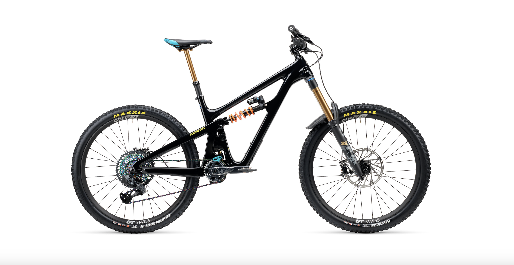
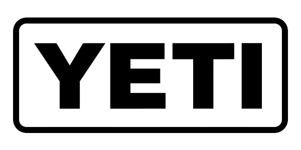

Yeti Cycles es una marca americana de bicis de alta gama, conocida por su calidad y rendimiento en DH y enduro.
Yeti SB165

Precio: $7.499.00
Bicicleta de enduro/downhill con 165mm de recorrido y tecnologia Switch Infinity.

Yeti Cycles es una marca americana de bicis de alta gama, conocida por su calidad y rendimiento en DH y enduro.

Bicicleta de enduro/downhill con 165mm de recorrido y tecnologia Switch Infinity.